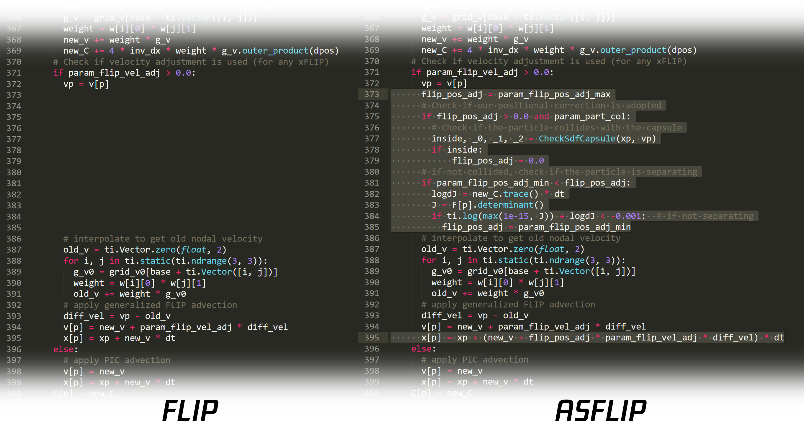

Minimal Code Modification
One of the primary goals of this project is to achieve an energetic simulation with minimal modifications to a classic MPM solver. Less than 15 lines of code need to be added or modified for the FLIP integrator to become an ASFLIP integrator.
Abstract
The material point method recently demonstrated its efficacy at simulating many materials and the coupling between them on a massive scale. However, in scenarios containing debris, MPM manifests more dissipation and numerical viscosity than traditional Lagrangian methods. We have two observations from carefully revisiting existing integration methods used in MPM. First, nearby particles would end up with smoothed velocities without recovering momentum for each particle during the particle-grid-particle transfers. Second, most existing integrators assume continuity in the entire domain and advect particles by directly interpolating the positions from deformed nodal positions, which would trap the particles and make them harder to separate. We propose an integration scheme that corrects particle positions at each time step. We demonstrate our method's effectiveness with several large-scale simulations involving brittle materials. Our approach effectively reduces diffusion and unphysical viscosity compared to traditional integrators.
{kind=link}
{kind=link}
{kind=link}
{kind=link}
{kind=link}
Acknowledgments
We thank Chendi (Wayne) Wei, Bo (Brandon) Yang, Bing (Binbin) Tang, Jun (Jim) Yin, Dafu (Hyton) Deng, Xiaochun (Willim) Cui and other colleagues in Common R&D Operation System (CROS) of Tencent IEG for their full support, Hua (Toby) Zhang, Jingxiang Li, Cheng Ge and other colleagues in NExT Studios for the modeling and shading of Cassandra Chen, Jiarun (Kelvin) Cai for discussions on Unreal plugin development, Katherian Xia and Sean Hu for proofreading, and Yichen (Peter) Chen for sharing the example setup in Fig. 5. In addition, we would like to thank the anonymous reviewers for their insightful comments.